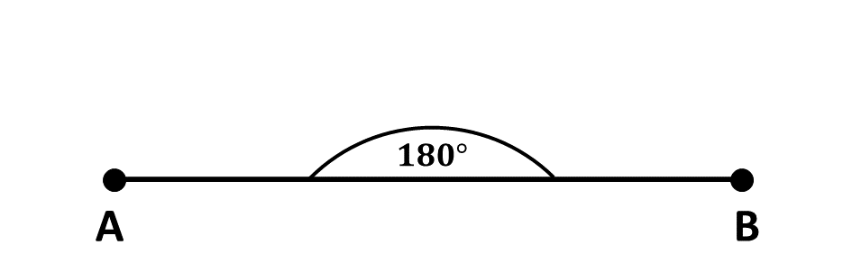
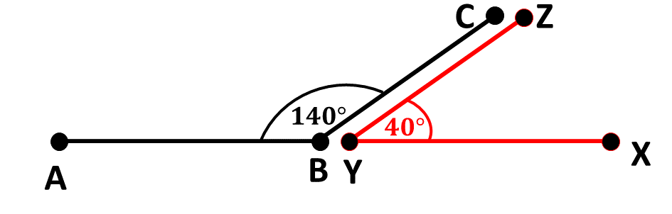

In a previous lesson, we learnt that the angle formed by a straight line is \(180^\circ\). Consider the diagram below:
When two (2) angles sum up to \(180^\circ\), we say that they are supplementary to each other.
Supplementary angles are two angles whose sum is 180 degrees. These angles form a straight line or a straight angle when combined.
Consider the diagram below:
The two angles above, \(\angle ABC\) and \(\angle XYZ\) are said to be supplementary angles as the sum of \(\angle ABC( 140^\circ)\) and \(\angle XYZ(40^\circ) \) is \(180^\circ\).
That is, \(140^\circ + 40^\circ = 180^\circ\)
\(*\) The sum of two supplementary angles is always \(180^\circ\)
\(*\) If one of the supplementary angles is known, the other can be found by subtracting the given angle from \(180^\circ\).
Unknown angle \(= 180^\circ - \) Known angle
Solve the following questions:
1. An angle measures \(68^\circ\). What is its supplementary angle?
2. Are \(120^\circ\) and \(60^\circ\) supplementary angles?
3. Two supplementary angles are such that one is twice the other. Find their measures.
4. Two angles form a straight line. If one of the angles is \(85^\circ\), find the measure of the other angle.
5. Two angles are \(95^\circ\) and \(75^\circ\). Are they supplementary?
Answers
1. \(112^\circ\)
2. Yes they are supplementary angles. \(120^\circ + 60^\circ = 180^\circ\).
3. The angles are \(60^\circ\) and \(120^\circ\) respectively.
4. \(95^\circ\)
5. No, they are not supplementary angles. \(95^\circ + 75^\circ \ne 180^\circ\)
To advertise on our website kindly call on 0208711375 or 0249969740.